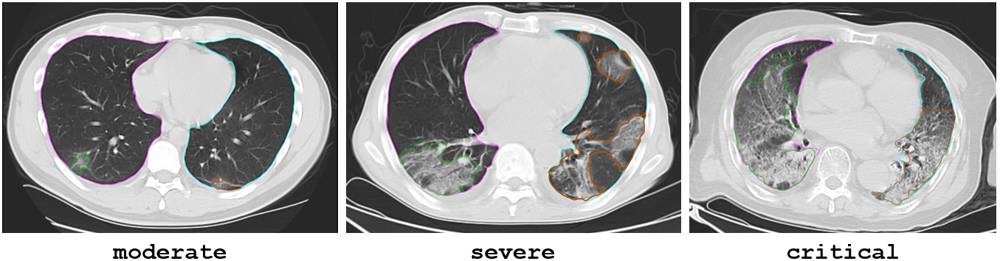

AI-Powered Quantitative Assessment of Coronavirus Pneumonia (COVID-19) in CT Images
The coronavirus disease 2019 has evolved into a global pandemic with ever-increasing health, economic and social impact. One pressing clinical challenge we are currently addressing at 3D Imaging Lab is to properly classify new patients according to quantifiable measures of disease severity so as to optimize healthcare resource utilization. We use our namesake freeware 3DQI to segment healthy tissues and pathological lesions in lungs, compute hundreds of radiomic features, and develop machine learning models to seek the most accurate answers to the clinical problems facing us.
A 54-year-old female COVID-19 patient confirmed by RT-PCR positive on 01/24/2020. Chest CT scans on 01/24/2020 and 01/30/2020 show the progress of pneumonia: from the initial multifocal ground-glass opacities (GGOs) to multifocal consolidation; lesions in right lung changed from 130.98 CC (-524.8 ± 147.1 HU) to 195.9 CC (-427.2 ± 281.5 HU), lesions in left lung changed from 231.4 CC (-511.5 ± 150.7 HU) to 153.6 CC (-442.9 ± 281.2 HU).

CT images of typical patients with moderate, severe and critical COVID-19. Some patients are at in-between stages, necessitating the development of an automatic and accurate classifier.
Heatmap of the selected features (left) and performance of the machine learning model (right). Each patient has a large collection of clinical “features” that can be used as measures of COVID-19 severity (1 = moderate, 2 = severe, 3 = critical). They are, however, not equally effective candidates. We algorithmically identify and select the best features in the sense that they give rise to a machine learning model with highest classification accuracy. The confusion matrix reveals which predicted category the machine learning model puts the reference cases into. Our model has thus far achieved 78.2% overall accuracy.